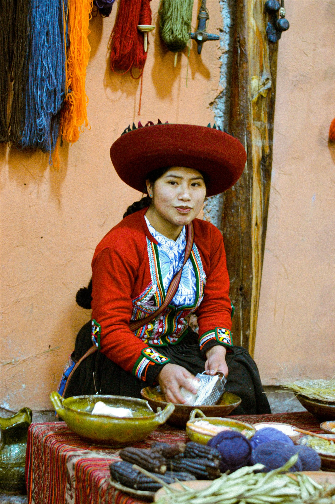
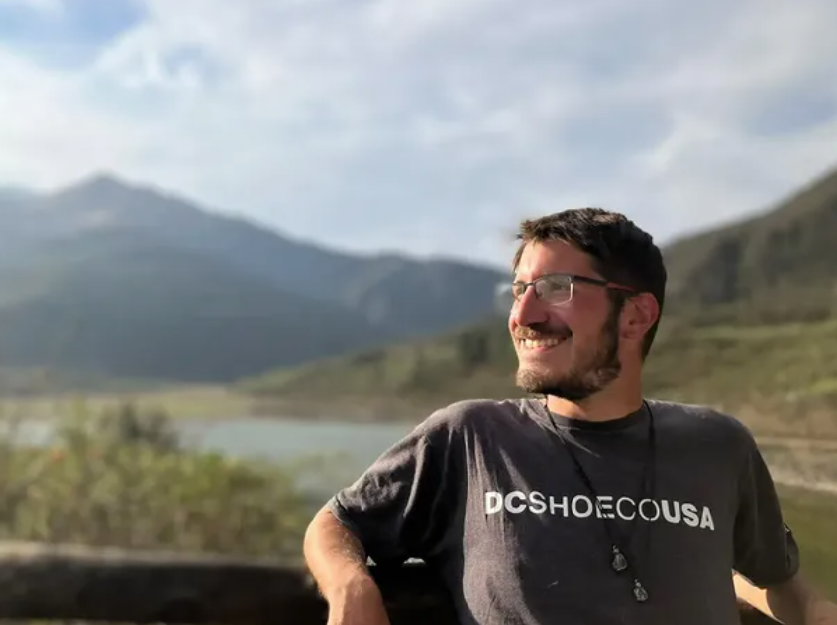
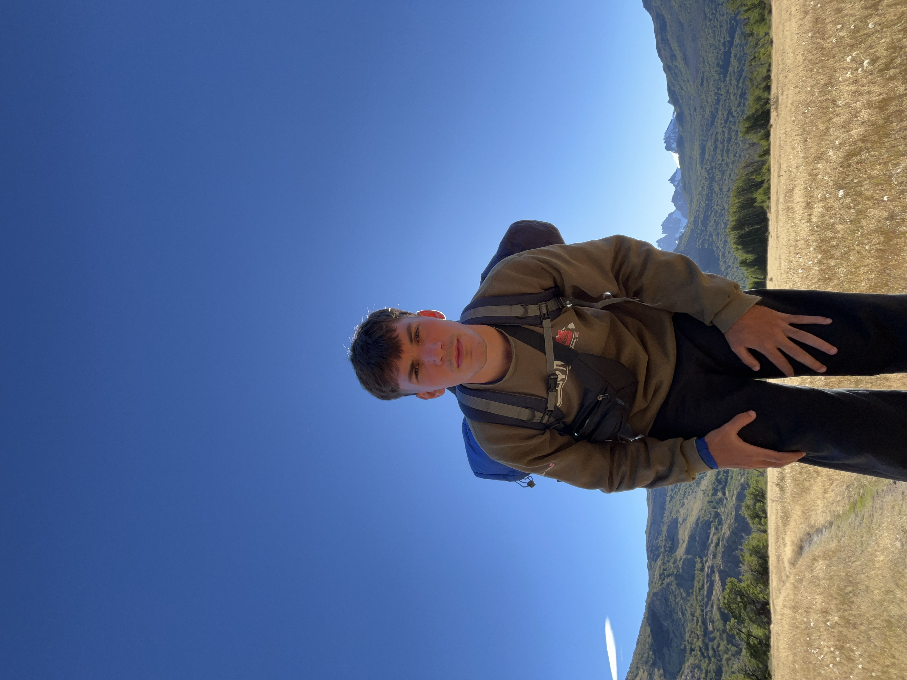

Nosotros
Proyecto Raíces reúne experiencias para conocer cada destino de una manera diferente, combinando naturaleza, cultura, aventura y encuentros.


Somos Proyecto Raíces
Somos tres personas de Buenos Aires que un día decidimos convertir nuestra forma de viajar en un proyecto: ir despacio, en grupos chicos, y volver de cada lugar habiendo entendido algo más de él.
Armamos cada propuesta junto a guías y comunidades locales, cuidando los lugares que recorremos y priorizando experiencias reales por sobre los circuitos de siempre.

Santiago

Belén

Ignacio
Cómo viajamos
Ya sea un día o varias semanas, armamos cada salida de la misma manera: despacio, en grupo chico y mirando el lugar de cerca. Elegí el formato que más se ajuste a tu tiempo — el espíritu es siempre el mismo.
Grupos chicos
Viajamos con pocas personas a la vez, para que cada salida se sienta cercana y nunca una excursión más entre desconocidos.
Conexión con el lugar
No miramos el paisaje desde la ventanilla: paramos, caminamos y le damos tiempo a cada lugar para que se muestre de verdad.
Mirada responsable
Viajamos de la mano de guías y comunidades locales, cuidando cada rincón que recorremos como si fuera propio.
¿Querés conocernos mejor?
Escribinos y contanos qué tipo de experiencia estás buscando.